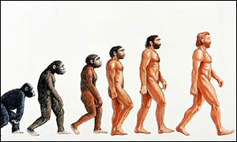
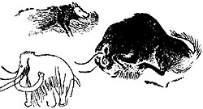

Amikor Ch. Darwin 1859-ben megjelentette A fajok eredete című munkáját, már tudott arról, hogy három évvel azelőtt Németországban találtak egy fosszilis csontvázat, amely egy jégkorszakban élt és a mai embernél "primitívebb" megjelenésű ember maradványa volt. Így a könyvében utalhatott arra, hogy az evolúció törvényszerűségei az emberre is vonatkoznak.

A XX. század első felében, a spanyolországi Altamira barlangban bukkantak rá a jégkorszakból fennmaradt első írásos ábrázolásokra. A barlang falait kiszínezett állatrajzok, bölények, vaddisznók, vadlovak festményei díszítették.